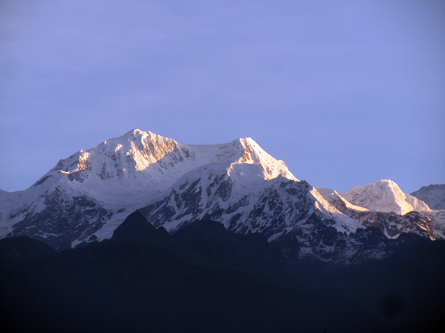
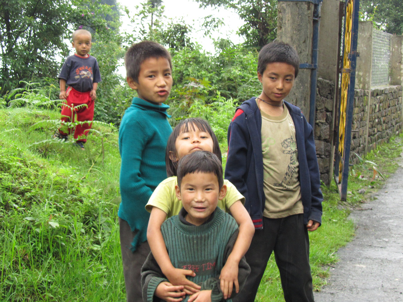

INTRODUCTION
This small but beautiful Indian state is situated in the eastern Himalayas, bordered by Bhutan, Tibet and Nepal. The state is spread below the mighty Mt. Kanchenjunga (8586 mts), which is the third highest mountain in the world. Local legends speak to countless ornaments, weapons and holy manuscripts present there. It has a total of area of 7,300 sq. kms spreading 114 kms from north to south and 64 kms from the east to west. The elevation ranges from 300 mts to over 8540 mts above sea level [1].
PEOPLE
Sikkim is the least populated state in the country. There are three principal communities of Nepalis, Lepchas and smaller proportions of Bhutias and Limbus. Nepali is the state language. Buddhism is entrenched in the tradition of the state eventhough Hinduism is also followed. The Choksees-Small wooden tables adorned with local Tibetan designs, Tibetan carpets and Specially carved dragon sets of gold and silver inlaid with precious stones are the special crafts [2].
HOW TO GET THERE
Nearest airport to Sikkim is Bagdogra, near Siliguri in North Bengal, which is 124 km and approximately four hours drive from Gangtok. You can also take a helicopter from Bagdogra to Gangtok. Meanwhile, the nearest railway stations are Siliguri and New Jalpaiguri. Both of these have a number of trains connecting them to Kolkata. You should be able to get pre-paid taxis to Gangtok outside the railway stations easily. Also the Sikkim government has fixed rate (and fixed schedule) buses between Siliguri and Gangtok. [3].
Highlights
Leared to implement a very minimalistic interface.
Used combination of multiple CSS classes.
Accessed CSS elements by ID as well as class.